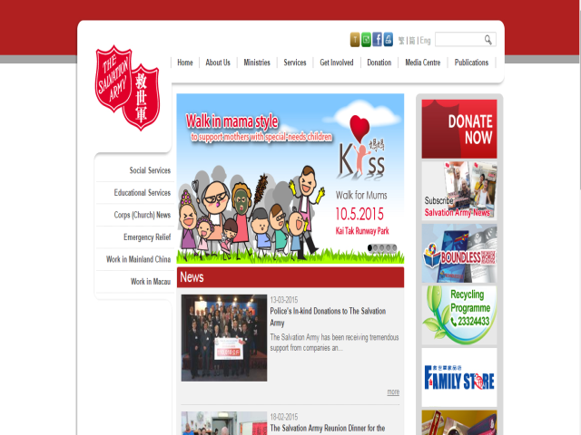

The Salvation Army
Aim & Mission
The Salvation Army is an international Christian church and charity working in 126 countries and has been serving Hong Kong for over 80 years. With the commitment to transforming lives, caring for people and making disciples, we are currently operating 81 social services units, 33 schools and nurseries, 17 corps (churches) and 1 outpost and 16 Family Stores in Hong Kong and Macau. There are offices in Hong Kong, Beijing and Yunnan for poverty alleviation development in China.
International Mission Statement
The Salvation Army, an international movement, is an evangelical part of the universal Christian Church.
Its message is based on the Bible.
Its ministry is motivated by the love of God.
Its mission is to preach the gospel of Jesus Christ and to meet human needs in His name without discrimination.
Services & Activities
Services
- Elderly Services
- Rehabilitation Services
- Youth, Family and Community Services
- Education and Employment Service
- Community Projects
- Camp Service
- Social Enterprises
The Salvation Army 85th Anniversary Activities
- The Salvation Army “United to Care” Photo Competition
- The Salvation Army Historical Items Collection
Fund-raising Programmes
- The Salvation Army Kiss Mama Walk for Mums
- The Salvation Army Chinese New Year Gift Transfer
- Lai See Appeal 2015
- The Salvation Army Christmas Appeal 2014
- The Salvation Army Christmas Candy Sale 2014
- The Salvation Army Orienteering / Family Adventure 2014
- The Salvation Army Mid-Autumn Festival Appeal 2014
- The Salvation Army Flag Day
Charity Programmes
- The Salvation Army Gift Box
- Harbour City Bag & Stationery Sharing Fun
- Hallmark Babies Recycling Programme
- Beverly Hills Polo Club Suitcase Recycling Programme
Job & Volunteering
Job Opportunities
There are different job opportunities, for example office assistant. If you would like to discover more, please search this website: http://www.salvationarmy.org.hk/job_vacancies/5/
Volunteering
The Salvation Army organises various fund-raising activities to support for its programmes to serve the needy. If you would like to get more information, please search this website:
https://salvationarmy.org.hk/en/get_involvedContacts
General Enquiries
- Hotline: (852) 23324531
- Fax No.: (852) 23850828
- Address: Community Relations Department, 11 Wing Sing Lane, Yaumatei, Kowloon, Hong Kong
- Postal Address: P.O. Box 70129, Kowloon Central Post Office, Hong Kong
- Email: ssdenq@ssd.salvation.org.hk
- website: http://www.salvationarmy.org.hk/en/
Screen-shot: 
back to top